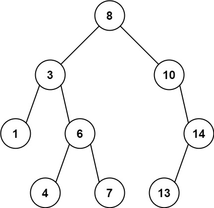
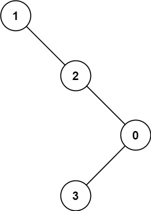

1026. 节点与其祖先之间的最大差值
DFS 自上而下给每个结点传「路径上的最大值 mx 和最小值 mn」，每个结点用它们与自己作差，取全局最大。
思路
- 祖先-后代差值的最大值，一定等于「某条根到结点路径的极值 vs 该结点」——不用枚举祖先对。
- 递归参数带
(mx, mn)：进入结点先更新mx = max(mx, v)、mn = min(mn, v)。 - 每个结点处取
max(mx − v, v − mn)更新答案；孩子继承更新后的(mx, mn)。 - 根从
(root.val, root.val)起步；ans在多次调用间要重置（成员变量写法）。
图解
最优解
1class Solution {2 private int ans;3 4 public int maxAncestorDiff(TreeNode root) {5 ans = 0;6 dfs(root, root.val, root.val); // 自根向下传「路径上见过的最大/最小值」7 return ans;8 }9 10 private void dfs(TreeNode node, int mx, int mn) {11 if (node == null) return;12 mx = Math.max(mx, node.val); // 当前路径的最大、最小值13 mn = Math.min(mn, node.val);14 ans = Math.max(ans, Math.max(mx - node.val, node.val - mn));15 dfs(node.left, mx, mn); // 最大的差一定出现在「路径极值 vs 本结点」16 dfs(node.right, mx, mn);17 }18}题目
给定二叉树的根节点 root，找出存在于 不同 节点 A 和 B 之间的最大值 V，其中 V = |A.val - B.val|，且 A 是 B 的祖先。
（如果 A 的任何子节点之一为 B，或者 A 的任何子节点是 B 的祖先，那么我们认为 A 是 B 的祖先）
示例 1：

输入：root = [8,3,10,1,6,null,14,null,null,4,7,13] 输出：7 解释： 我们有大量的节点与其祖先的差值，其中一些如下： |8 - 3| = 5 |3 - 7| = 4 |8 - 1| = 7 |10 - 13| = 3 在所有可能的差值中，最大值 7 由 |8 - 1| = 7 得出。
示例 2：

输入：root = [1,null,2,null,0,3] 输出：3
提示：
- 树中的节点数在
2到5000之间。 0 <= Node.val <= 105
题面取自力扣当前版本。
数据快照 2026-11-04。题面版权归力扣所有，本站点仅供本人学习使用，请勿对外发布。